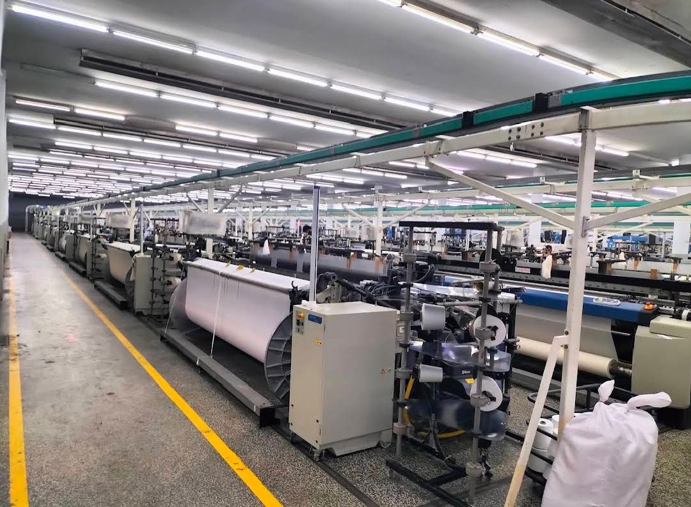
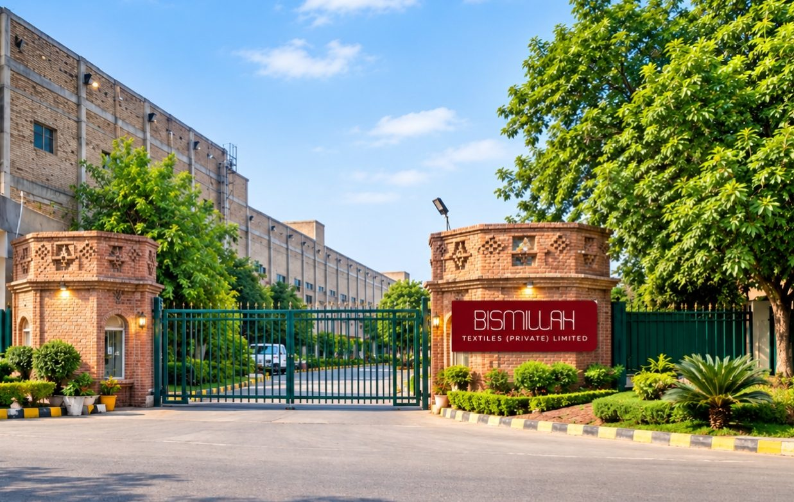
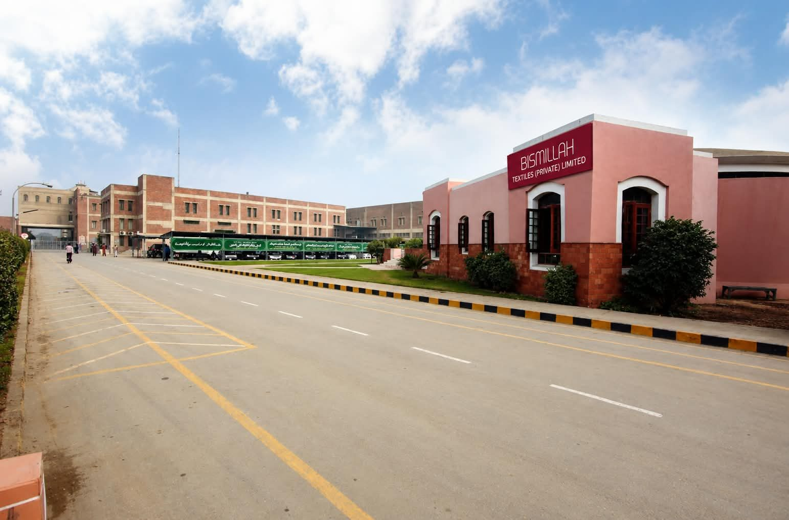
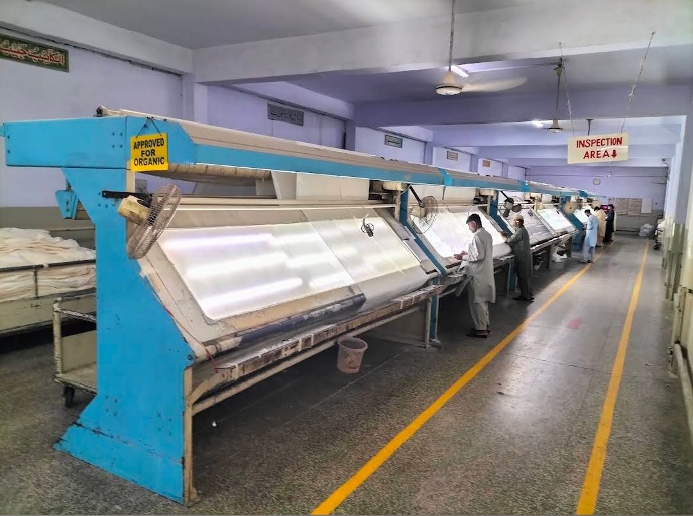
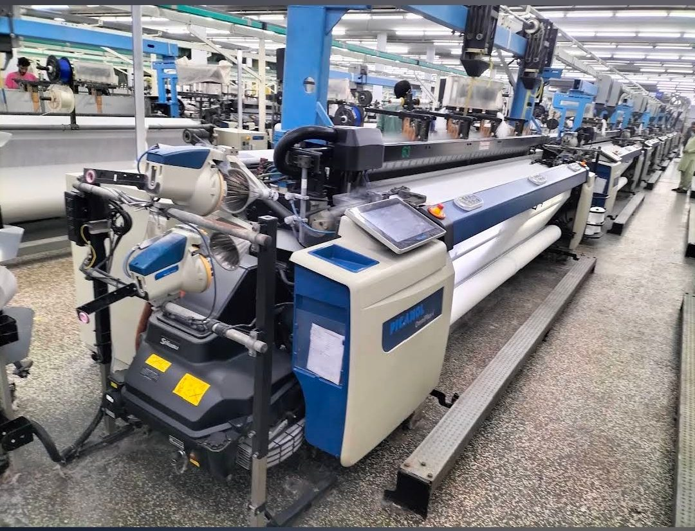

Capacity 01
Yarn & Materials
In-house cone dyeing produces dyed yarn and distinctive design combinations, with published capacity of 180,000 kg per month.
Founded in 1989, Bismillah Textiles brings weaving, yarn dyeing, processing, embroidery, quilting, wadding, cutting and stitching together at its Faisalabad operations.

The following capacities and capabilities are taken from the company information carried in the previous Bismillah Textiles website. Programme availability should be confirmed for each enquiry.
In-house cone dyeing produces dyed yarn and distinctive design combinations, with published capacity of 180,000 kg per month.
136 air-jet looms support more than one million metres per month across jacquard, matelassé, dobby, plain and other fabrics from 120 to 600 thread count.

18 stitching units provide modern cut-to-pack capability of more than four million metres per month.

More than 2,500 people support integrated manufacturing, quality, service and operational continuity.

Two continuous bleaching ranges, three rotary printing machines and two continuous dyeing ranges support processing programmes.

Eighteen single-needle computerized quilters and two multi-needle continuous machines support up to 500,000 metres quilted per month; wadding exceeds 175,000 kg per month.
Embroidery machinery supports detailed designs up to 400 × 1,200 mm, while in-house quality and process controls operate across the manufacturing route.
Cone dyeing produces dyed yarn and design combinations at 180,000 kg per month.
Air-jet looms deliver jacquard, matelassé, dobby and plain constructions.
Bleaching, rotary printing and continuous dyeing ranges support finishing.
Quality checks and experienced technicians support each stage.
Selected views of the campus and production floor behind our day-to-day manufacturing.



